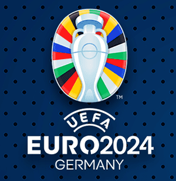
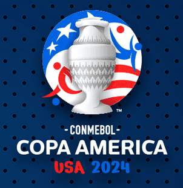

Introduction
1 Project Overview
The summer of 2024 was a remarkable period for soccer fans, featuring two of the most anticipated global tournaments: Copa América and UEFA Euro 2024. These events captured the collective attention of millions, providing thrilling matchups, unforgettable moments, and a chance for nations to showcase their footballing prowess. This project delves into the fascinating intersection of fan perceptions on Reddit and actual match and player metrics, aiming to uncover how online sentiments align with or diverge from team performance and match outcomes.
 
The UEFA Euro 2024 tournament highlighted the pinnacle of European football, transforming Germany into a grand stage for national pride and athletic excellence. With 24 countries competing for the title, the event was filled with high-stakes matches, dramatic upsets, and iconic displays of skill. Fans across the globe tuned in to witness potential history in the making, and the tournament became a hotbed of discussion in online forums, particularly Reddit. These discussions offer a treasure trove of data, reflecting hopes, fears, and reactions to each phase of the competition.
Copa América 2024, meanwhile, brought together the premier national teams of South America and invited nations, creating a platform for fierce competition and national pride. Hosted across the United States, this tournament not only emphasized sporting excellence but also celebrated the cultural richness of its participants. As fans cheered for their teams from the stands and on social media, Reddit became a hub for vibrant discussions, offering an unfiltered look into the emotions and perspectives of passionate supporters.
These tournaments represent more than just sporting events—they are cultural phenomena that weave together national identities, competitive ambitions, and global football dynamics. By examining fan discussions and performance metrics from these simultaneous international competitions, this project aims to reveal the nuanced ways in which digital discourse intersects with athletic performance and shapes the narrative of national sporting legacies.
2 Why It Matters
In the modern digital landscape, platforms like Reddit are not just spaces for casual conversation but also significant drivers of public opinion and community engagement. Soccer fandom, which thrives on shared emotions and collective experiences, finds its voice in these online spaces. By analyzing linguistic and emotional patterns within soccer fan communities, this project uncovers insights into:
- The emotional pulse of fans during critical tournament moments
- How online sentiment shifts in reaction to team performance
- The potential for predictive insights into match outcomes and trends
As global tournaments grow in scale and impact, understanding these digital dynamics becomes vital for sports organizations, brands, and even policymakers. The conversations happening in these spaces reflect broader societal narratives, blending sports with culture, identity, and economics.
3 Goals & Impact
This project goes beyond data analysis to create actionable insights that resonate across industries. By understanding fan sentiment, we can:
- Improve fan engagement strategies by identifying what truly matters to supporters
- Design targeted marketing campaigns that capture the emotional highs and lows of tournament moments
- Bridge the gap between public opinion and real-world outcomes, fostering a deeper connection between fans and the sport they love
For fans, these tournaments are about more than just the final score—they are about the journey, the stories, and the shared experiences. This project captures those elements, showcasing how fan expectations evolve throughout high-stakes competitions.
4 Key Features
This research integrates data from multiple sources, including Reddit posts, match statistics, and individual player metrics. Using advanced techniques in Natural Language Processing (NLP) and Machine Learning (ML), it identifies patterns in discourse and tests their predictive power. Key features include:
- Sentiment Analysis: Identifying positive, negative, and neutral sentiments during different tournament phases
- Topic Modeling: Highlighting the key themes dominating fan discussions
- Prediction Models: Testing the correlation between Reddit sentiment and match outcomes
- Cross-Tournament Comparisons: Examining how fan perceptions differ across cultural and competitive contexts
5 Goals & Questions
Our project focuses on answering the following questions:
- Correlation Analysis: How do fan sentiments on Reddit correlate with actual team performance?
- Prediction Potential: Can Reddit discourse predict match outcomes?
- Cultural Insights: What linguistic and emotional patterns emerge across national fan communities?
- Perception Shifts: How do pre-tournament expectations differ from mid-tournament perceptions?
The findings from this project contribute to a growing understanding of how online communities influence and mirror real-world events.